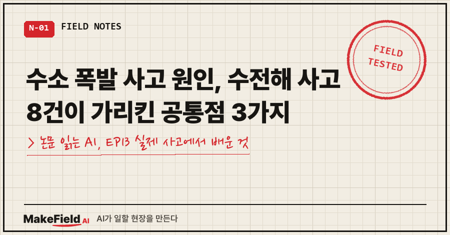
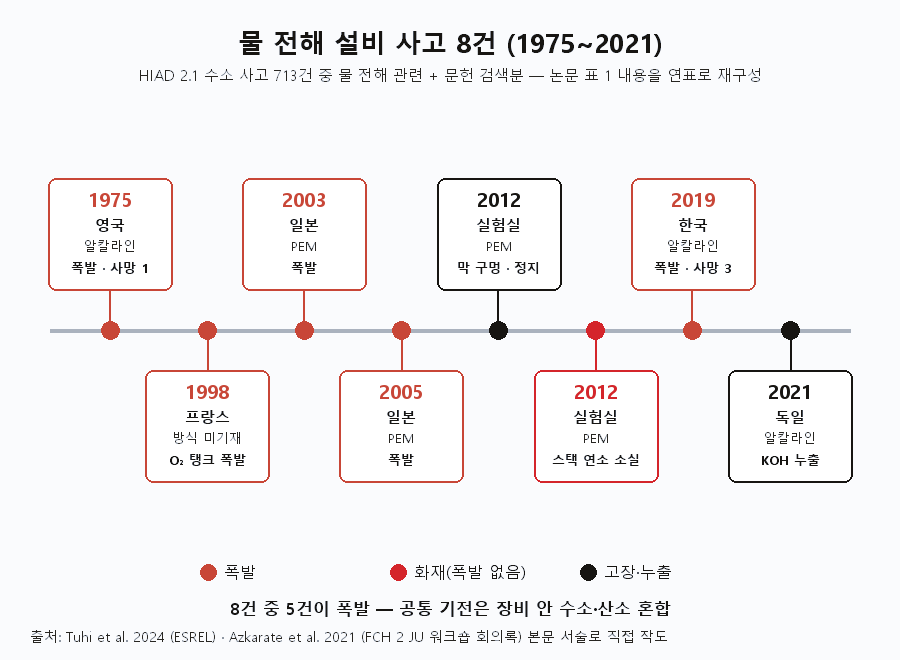
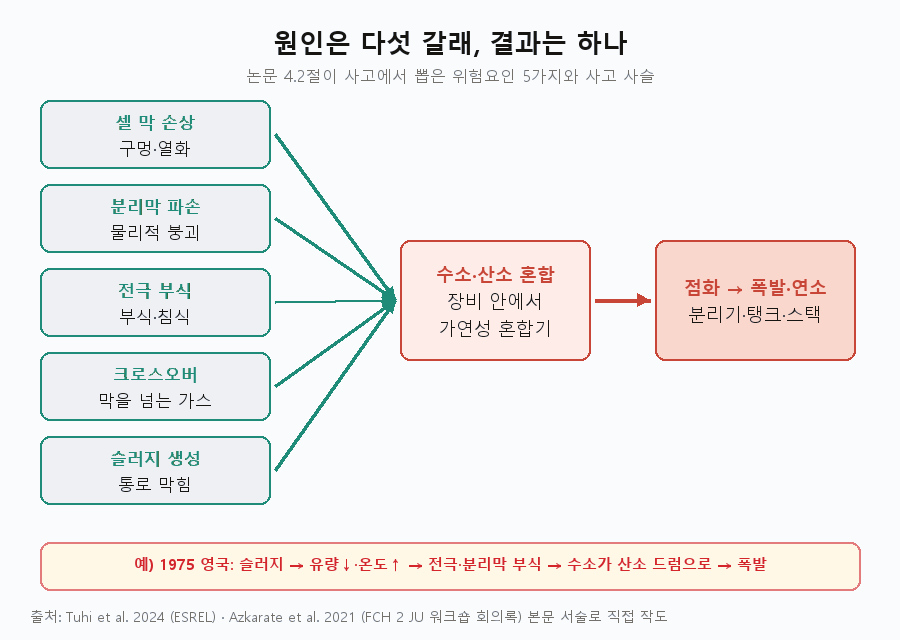
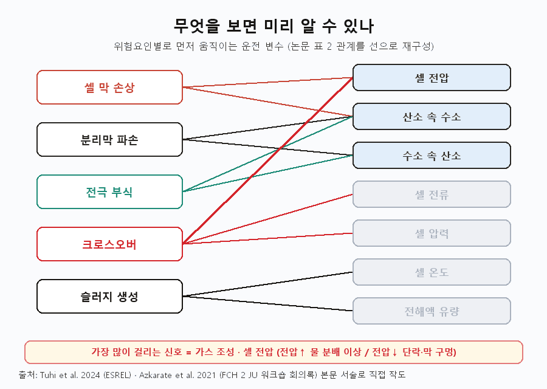
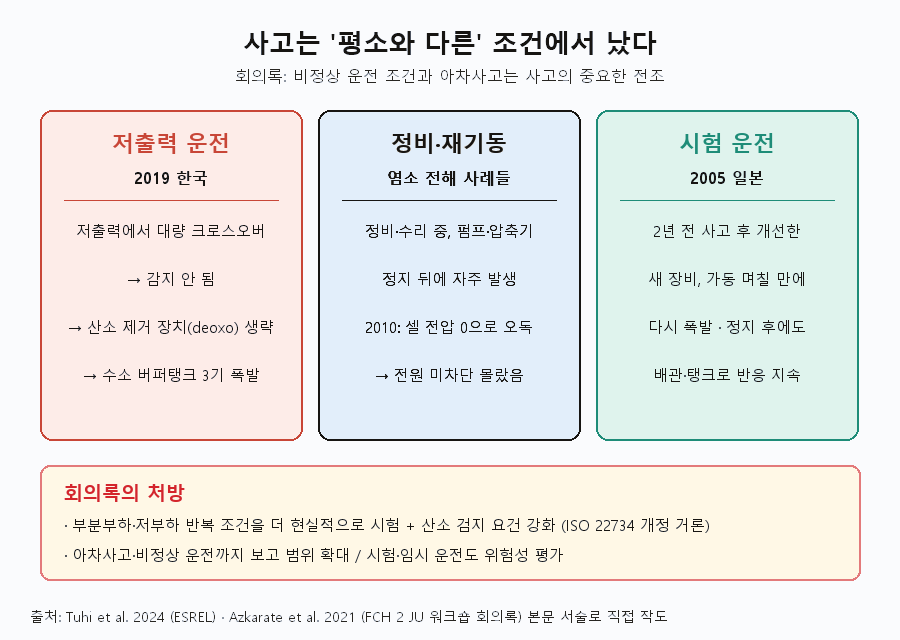
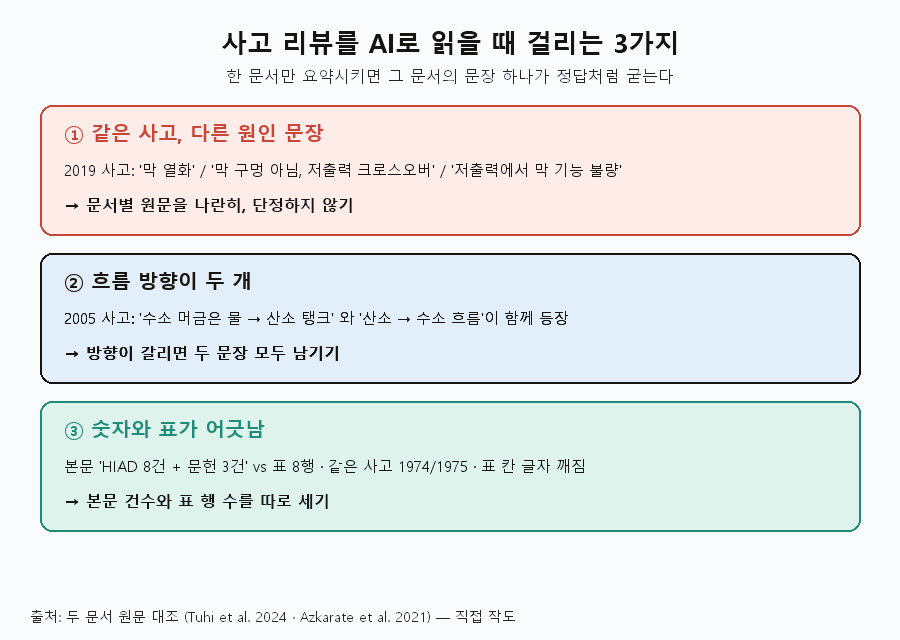

수소 폭발 사고 원인을 수전해 설비 사고 기록에서 찾아보면, 출발점은 제각각인데 끝은 하나로 모입니다. 1975~2021년 사고 8건을 검토한 2024년 논문은, 가장 나쁜 결과인 폭발이 대부분 장비 안에서 수소와 산소가 섞이면서 시작됐고, 여러 사고에서 가스 순도나 셀 전압에 이상 신호가 먼저 나타났다고 정리했어요 [Tuhi 2024, 4.2~4.3절].
'논문 읽는 AI' 13편, 3부 '안전'의 두 번째 글입니다. 지난 편이 "사고가 나면 얼마나 떨어져 있어야 하나"였다면, 이번엔 사고가 왜 났는지를 봅니다.
읽은 문헌은 두 편이에요. 노르웨이 NTNU·SINTEF 연구진이 ESREL 2024에 낸 「Accidents Review and Control Assessment for Reliable Operation of PEM Water Electrolyzer Stacks」와, 유럽 FCH 2 JU가 2020년 11월 18일 연 '전해 안전' 온라인 워크숍 회의록(2021년 1월 작성)입니다 [Azkarate 2021].
1. 이 논문은 무엇을 풀려 했고, 어떻게 했나요
전해 설비는 고장 통계가 부족해서, 과거 사고를 하나씩 뜯어보는 것이 위험을 파악하는 현실적인 방법이라는 게 출발점이에요 [Tuhi 2024, 1장]. 화학·석유화학·원자력 분야에서 오래 써 온 방식이라고 덧붙입니다.
자료가 정말 적어요. 유럽 공동연구센터(JRC)의 수소 사고 데이터베이스 HIAD 2.1에 등록된 수소 관련 사고 713건 가운데, 물 전해 설비의 전해조와 직접 관련된 것은 8건뿐이었습니다 [Tuhi 2024, 4.1절].
워크숍 회의록도 같은 말을 해요. 데이터베이스 속 전해 사고는 대부분 수소가 부산물로 나오는 염소 전해 공장 사고이고, 수소 생산용 물 전해 사고는 "일반적 경향을 끌어내기엔 너무 적다"고 적었습니다 [Azkarate 2021, Session 1].
그래서 이 논문의 목표는 두 가지였어요 [Tuhi 2024, Abstract].
- 사고 기록에서 위험요인(hazard)을 뽑는다
- 그 위험요인이 어떤 운전 변수에 먼저 드러나는지 연결해, PEM 스택 제어 구조 설계에 쓴다
방법은 사고 → 위험요인 → 감시 변수의 세 단계입니다 [Tuhi 2024, 3장].
- HIAD 2.1에서 물 전해 관련 사고를 모으고, 과학 문헌 데이터베이스에서 추가 사고를 찾는다
- 사고 설명·주원인·교훈을 읽고, 전해조를 파괴할 수 있는 원인을 위험요인으로 묶는다
- 위험요인과 운전 변수(가스 조성·셀 전압·온도 등)의 관계를 표로 세우고, 이를 바탕으로 PEM 스택의 기초 제어층을 설계한다
알칼라인과 PEM은 구조가 비슷해서 두 방식의 사고를 함께 봤어요 [Tuhi 2024, 3장]. 정리된 사고는 다음 8건입니다 [Tuhi 2024, Table 1].

| 연도·장소 | 방식 | 무슨 일이 | 피해 |
|---|---|---|---|
| 1975 영국 | 알칼라인 | 슬러지로 전극·분리막 부식 → 수소·산소 혼합 폭발 | 사망 1 |
| 1998 프랑스 | 언급 없음 | 산소 저장탱크에 수소 유입 → 폭발 | 사망 0 |
| 2003 일본 | PEM | 수위 저하로 수소가 산소 분리탱크로 → 폭발 | 언급 없음 |
| 2005 일본 | PEM | 티타늄 전극 연소 → 폭발 | 사망 0 |
| 2012 실험실 | PEM | 막에 구멍 → 고장 감지 후 정지 | 사망 0 |
| 2012 실험실 | PEM | 수소·산소 혼합 연소로 스택 소실 | 사망 0 |
| 2019 한국 | 알칼라인 | 막 열화로 혼합 → 수소 버퍼탱크 폭발 | 사망 3·부상 6 |
| 2021 독일 | 알칼라인 | 유로에 슬러지 침착 → KOH(수산화칼륨) 누출 | 사망 0 |
몇 건은 규모가 숫자로 남아 있어요. 1975년 영국 라포르테 사고는 1,690 L 산소 드럼에 수소가 약 13.5% 섞여 있었고, 폭발 충격파가 TNT 22 kg에 해당했습니다 [Tuhi 2024, 4.1절]. 1998년 프랑스 사고에선 저장탱크 돔이 135 m 날아갔어요 [Tuhi 2024, 4.1절].
2. 공통 원인 ① — 결국 수소와 산소가 섞였다
사고 설명을 다 모아 보면 최악의 결과는 장비 안 수소·산소 혼합에 의한 폭발이고, 그 혼합을 만든 원인이 위험요인이라는 게 논문의 첫 결론이에요 [Tuhi 2024, 4.2절].
논문이 뽑은 위험요인은 다섯 가지입니다 [Tuhi 2024, 4.2절].
- 셀 막 손상(구멍·열화)
- 기체 분리막(separator)의 물리적 파손
- 전극 부식
- 가스 크로스오버(막을 넘어 반대쪽으로 새는 현상)
- 슬러지(찌꺼기) 생성

라포르테 사고가 이 사슬을 그대로 보여 줘요. 슬러지가 전해액 통로를 막자 유량이 줄고 셀 온도와 전해액 농도가 올라갔습니다. 그게 전극과 분리막을 부식시켰고, 분리막이 무너지자 수소가 산소 드럼으로 넘어가 터졌어요 [Tuhi 2024, 4.1절].
PEM 쪽은 조금 다릅니다. 워크숍 회의록은 실험실 사고 2건을 두 단계 과정으로 설명해요. 먼저 고분자 막에 국소적으로 구멍이 나고, 이어서 칸 안에 있던 수소와 산소가 촉매 위에서 재결합하며 스택과 연결부까지 파괴한다는 거예요 [Azkarate 2021, Session 1]. 2012년 사고에선 스택이 몇 초 만에 연소로 파괴됐고, 연구진은 상압 스택에도 스스로를 파괴할 만큼의 연소 에너지가 있다고 결론 냈습니다 [Azkarate 2021, Table 2 — Millet 2012 인용].
3. 공통 원인 ② — 신호는 먼저 왔는데 놓쳤다
과거 사고들을 보면 위험이 터지기 전에 운전 변수에 이상이 먼저 나타났고, 대부분의 사고에서 폭발 전에 가스 조성이 기준값을 넘었다고 논문은 적었어요 [Tuhi 2024, 4.3절].
가장 오래된 기준은 1975년 라포르테 사고 보고서에서 나왔습니다. 논문이 인용한 경보·정지 기준은 이렇습니다 [Tuhi 2024, 4.3절 — HM Factory Inspectorate 1976 인용].
| 감시 대상 | 경보(시각·청각) | 설비 정지 |
|---|---|---|
| 산소 순도 | 98.8%로 떨어질 때 | 98%로 떨어질 때 |
| 수소 순도 | 99.7%로 떨어질 때 | 99.5%로 떨어질 때 |
뼈아픈 대목은 회의록 표에 있어요. 라포르테 공장엔 시간마다 가스를 분석하는 체계가 있었지만, 분석이 늘 이뤄지지는 않았고 운전일지에 가정값이 적혀 있었다고 합니다 [Azkarate 2021, Table 2]. 셀 내부 손상도 사고 한참 전부터 시작됐을 것으로 봤어요.
셀 전압도 신호였습니다. 2012년 실험실 사고에서는 개별 셀 전압이 기준값 1.5 V 아래로 갑자기 떨어지고 산소 속 수소가 급증한 것을 보고 전원을 바로 끊었어요 [Tuhi 2024, 4.1·4.3절]. 2005년 일본 사고에서도 폭발 전 셀 전압 급락과 전류 증가가 관측됐습니다 [Tuhi 2024, 4.1절].
논문은 이렇게 위험요인과 감시 변수를 짝지었어요 [Tuhi 2024, Table 2].

| 위험요인 | 먼저 볼 운전 변수 |
|---|---|
| 셀 막 손상 | 셀 전압, 산소 속 수소 농도 |
| 분리막 파손 | 산소 속 수소, 수소 속 산소 농도 |
| 전극 부식 | 산소 속 수소, 수소 속 산소 농도 |
| 가스 크로스오버 | 셀 전압, 셀 전류, 셀 압력 |
| 슬러지 생성 | 셀 온도, 전해액 유량 |
전압이 오르면 물 분배 이상, 떨어지면 셀 단락이나 막 구멍을 의심하라는 해석도 붙어 있어요 [Tuhi 2024, 4.3절 — Azkarate 2020 인용]. 다만 회의록은 반대편 사례도 적었습니다. 막에 구멍이 나도 나머지 면이 여전히 분리막 역할을 해서 곧바로 단락이 일어나지 않을 수 있고, 그래서 제때 잡아내기 어렵다는 거예요 [Azkarate 2021, Table 2].
4. 공통 원인 ③ — 평소와 다른 조건에서 터졌다
두 문서의 사례를 겹쳐 보면 저출력 운전, 정비·재기동, 시험 운전처럼 '평소와 다른 조건'에서 사고가 반복됩니다. 회의록도 "비정상 운전 조건과 아차사고는 사고의 중요한 전조"라고 적었어요 [Azkarate 2021, Session 1].

- 저출력 운전 — 2019년 강릉: 태양광과 연계한 알칼라인 전해조(생산량 40 Nm³/h, 1.2 MPa 공급)의 수소 버퍼탱크 3기가 폭발했어요. 저출력에서 생긴 대량 크로스오버는 감지되지 않았고, 보통 다는 촉매식 산소 제거 장치(deoxo)도 빠져 있었습니다 [Azkarate 2021, Session 1·Table 2]. 사망 3명, 부상 6명이에요 [Tuhi 2024, Table 1].
- 정비·재기동 — 염소 전해 사고들: 회의록은 염소 전해 사고가 정비·수리 중이거나 압축기·펌프가 멈춘 뒤 자주 났다고 정리했어요 [Azkarate 2021, Session 1]. 2010년 사례에선 정비 중 셀 전원을 다시 끊지 않았는데, 셀 전압이 0으로 잘못 읽혀 아무도 몰랐습니다 [Azkarate 2021, Table 1].
- 시험 운전 — 2005년 일본: 2년 전 사고 뒤 물 보유량을 늘린 새 장비가 가동 며칠 만에 다시 폭발했어요. 전해조를 멈춘 뒤에도 배관·탱크로 반응이 이어졌습니다. 교훈은 "시험·임시 운전이라도 위험성 평가를 하라"였어요 [Azkarate 2021, Table 2].
강릉 사고에서 회의록이 끌어낸 결론은 부분부하·저부하 반복 조건을 더 현실적으로 시험하고, 산소 검지 요건을 강화하자는 것이었습니다. 수전해 수소 발생기 국제표준 ISO 22734 개정에서 다룰 수 있다고 적었어요 [Azkarate 2021, Session 1]. 그래서 아차사고(near miss)와 비정상 운전도 보고 범위에 넣자는 제안이 나왔습니다 [Azkarate 2021, Session 1].
5. 그래서 무엇을 제어하라고 했나요 — 그리고 이 논문의 한계
논문은 사고 교훈을 PEM 스택 기초 제어층 설계로 옮겼어요. 제어할 변수 5개는 산소극 압력, 양극 간 압력차, 셀 온도, 수소극 수소 조성, 산소극 산소 조성입니다 [Tuhi 2024, 5장].
| 제어 변수 | 짝지은 조작 변수 |
|---|---|
| 셀 온도 | 급수 온도 |
| 산소극 압력 | 급수 유량 |
| 양극 간 압력차 | 전류밀도 |
| 수소극 수소 조성 | 산소극 배출 밸브 |
| 산소극 산소 조성 | 수소극 배출 밸브 |
짝은 상대이득배열(RGA) 계산으로 골랐고, 기초층은 변수별로 따로 도는 PID 피드백 제어를 권했어요 [Tuhi 2024, 4.4절·Table 3]. 운전 범위로는 압력 1~30 bar, 온도 50~80℃를 인용했습니다 [Tuhi 2024, 4.4절 — IRENA 2020 인용].
한계도 분명합니다.
- 표본이 작다: 물 전해 사고는 8건뿐이고, 회의록은 이 정도로는 일반 경향을 말하기 어렵다고 했어요 [Azkarate 2021, Session 1].
- 강릉 사고는 최종 보고서 전: 두 문서 모두 조사 중이라고 적었습니다 [Tuhi 2024, 4.1절].
- 감시 방법은 범위 밖: 어떤 센서로 어떻게 재는지는 다루지 않는다고 밝혔어요 [Tuhi 2024, 1장].
- 단순 모델: 셀 전압을 일정하다고 놓고 발열만 고려한 단순 모델로 짝을 정했습니다 [Tuhi 2024, 3장]. 동특성 시뮬레이션 결과는 없어요.
6. 이 논문을 AI에게 읽힐 때 걸린 세 군데
이번 함정은 두 문서가 같은 사고를 다르게 적었다는 점이었어요. 한 문서만 요약시키면 그 문서의 문장 하나가 정답처럼 굳습니다.

① 같은 사고, 세 가지 원인 문장. "강릉 사고 원인이 뭐야?"를 두 문서에 따로 물으면 답이 달라져요. 원문을 나란히 놓으면 이렇습니다.
[ESREL 본문] degradation of the electrolyzer membrane caused oxygen to flow into the hydrogen stream
[회의록 본문] was not caused by membrane perforation, but gases cross-over under low power operating conditions
[회의록 표] defective functioning of the electrolyser's membrane, at lower power셋을 겹치면 "막 구멍이 아니라 저출력에서의 크로스오버, 최종 보고서는 미발간"까지가 두 문서가 함께 받쳐 주는 범위예요. 그래서 원인을 단정하지 않고 문서별 문장을 따로 인용했습니다.
② 흐름 방향이 두 개. 2005년 일본 사고를 ESREL 표는 "수소를 머금은 물이 산소 탱크로", 같은 논문 본문은 "산소가 수소 흐름으로"라고 적었어요. 회의록에도 두 표현이 다 나옵니다. 요약에서 한쪽만 고르면 틀린 문장이 되니, 방향이 갈리는 대목은 두 문장을 모두 남겨 두라고 따로 지시해야 했어요.
③ 숫자와 표가 어긋난다. ESREL 본문은 "HIAD에서 8건, 문헌에서 3건 더"라고 쓰는데, 표 1은 8행이고 그중 HIAD 번호가 붙은 건 5행입니다. 본문 숫자만 읽은 요약은 "11건"이 되기 쉬워요. 회의록도 라포르테 사고를 본문에선 1974년, 표에선 1975년으로 적었습니다. 텍스트로 뽑은 표는 'Franc / e', 'Germ / any'처럼 칸 안 글자까지 줄이 갈라져 나왔고요. 그래서 이 글의 사고 목록은 표의 행을 기준으로 세웠습니다.
여러분 분야의 사고·결함 보고서를 AI로 읽을 때 그대로 쓸 수 있는 질문을 옮겨 둡니다.
1) 같은 사건이 나오는 문서가 둘 이상이면, 사건마다 각 문서의 원인 문장을 원문 그대로 나란히 뽑아.
2) 문서끼리 원인·방향·연도·인명피해가 다르면 '불일치'로 표시하고, 어느 쪽도 고르지 마.
3) 본문에 나온 건수와 표의 행 수를 따로 세어 맞는지 확인해.
4) "조사 중", "추정", "unknown" 같은 단서가 붙은 원인은 확정 원인과 섞지 말고 따로 적어.
5) 표가 텍스트로 깨져 보이면 해당 쪽을 이미지로 보고 행·열을 다시 세워.7. 자주 묻는 질문
Q. 수전해 설비에서 수소 폭발 사고 원인은 주로 무엇인가요?
검토된 사고들에서 최악의 결과는 장비 안에서 수소와 산소가 섞여 터지는 것이었어요. 그 혼합을 만든 원인으로 막 손상, 분리막 파손, 전극 부식, 크로스오버, 슬러지 생성 다섯 가지가 꼽혔습니다 [Tuhi 2024, 4.2절].
Q. 사고 전에 미리 알아챌 수 있는 신호가 있나요?
가스 순도와 셀 전압이 대표적이에요. 산소 순도 98.8%·수소 순도 99.7%에서 경보, 98%·99.5%에서 정지가 1975년 사고 보고서의 권고였고, 2012년 실험실 사고는 셀 전압이 1.5 V 아래로 급락한 것으로 감지됐습니다 [Tuhi 2024, 4.3절]. 다만 막 구멍은 바로 단락으로 이어지지 않아 놓칠 수 있다고 해요 [Azkarate 2021, Table 2].
Q. 염소 전해 공장 사고도 참고가 되나요?
회의록은 데이터베이스 속 전해 사고 대부분이 염소 전해이고, 그 분야의 넓은 경험을 활용하자고 제안했어요. 정비·수리 중이나 펌프·압축기 정지 뒤에 사고가 자주 났다는 점이 공통 교훈입니다 [Azkarate 2021, Session 1].
정리하면, 수소 폭발 사고 원인을 기록으로 따라가면 세 갈래가 겹칩니다. 수소와 산소가 섞였고, 그 전에 순도·전압 신호가 있었고, 평소와 다른 조건에서 터졌다. 그래서 두 문서의 처방도 같은 곳을 가리켜요. 가스 조성을 연속으로 재고, 경보와 정지를 자동으로 묶고, 저부하·정비·시험 운전을 위험성 평가에 넣으라는 겁니다.
다음 편부터는 4부 '닳는 것'으로 넘어가, 스택이 어디부터 늙는지 PEM 산화극 촉매의 실패를 읽어 볼게요.
여러분이 읽는 사고 보고서에도 "같은 사고인데 문서마다 원인이 다른" 경우가 있었나요?
사고·결함 보고서를 AI로 대조하는 질문 모음은 makefield.ai에 모으고 있어요.